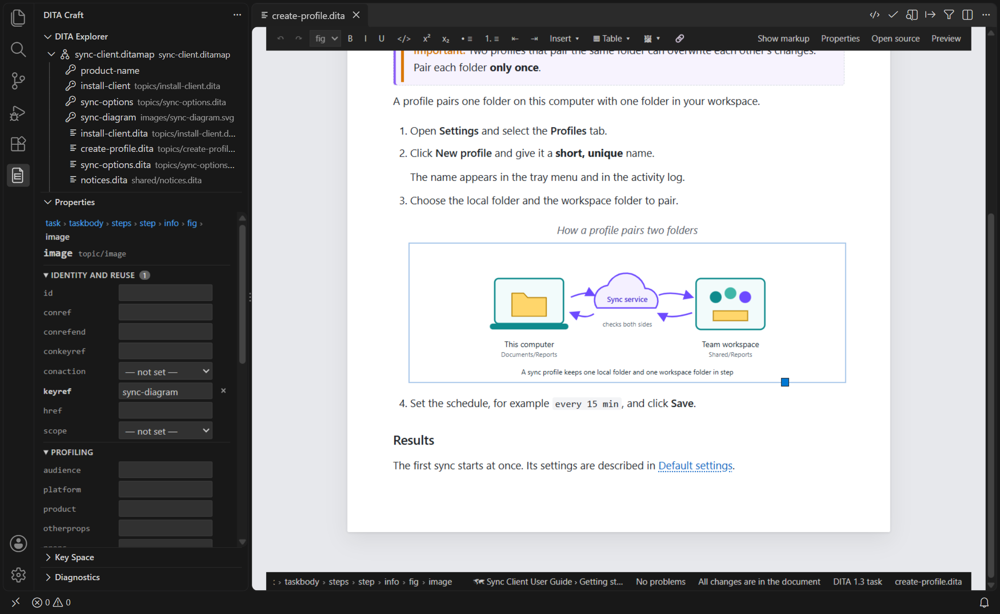

Properties View
The Properties view lists the attributes of the element at the cursor — in the visual editor or the text editor — straight from your document type, and edits them one at a time.
Opening the Properties View
The view is in the DITA Craft side bar. Open it with DITA: Show Properties, with Properties in the visual editor's toolbar, or with Attributes… in its right-click menu. It follows the active DITA editor: the visual editor and the text editor, for topics and maps.

What It Shows
- The breadcrumb at the top shows the elements around the cursor; click one to edit an ancestor.
- Every attribute the element may carry is listed, grouped as Identity and
reuse (
id,conref,keyref,href…), Profiling (audience,platform,product,otherprops,propsand your ownpropsspecializations), Common (outputclass,xml:lang,rev,status…), Element (such as a note'stype) and Architecture (@class,@domains, read only). - Enumerated attributes are drop-down lists, defaults are shown, and required
attributes are marked
*. - Profiling attributes offer the values of your subject scheme: type them, pick a suggestion, or add one with +.
Editing Attributes
Type a value and press Enter (or leave the field) to set it;
clear it or click × to remove the attribute;
Escape cancels. Values are checked first: an
id must be a valid token and unique in its scope, and an
enumerated value must be one of the list.
A change edits only that attribute in the element's start tag: the other attributes stay as written, and a start tag laid out over several lines keeps its layout. In the visual editor the change is an ordinary editing step (Ctrl+Z on the page undoes it); in the text editor it is a text edit.